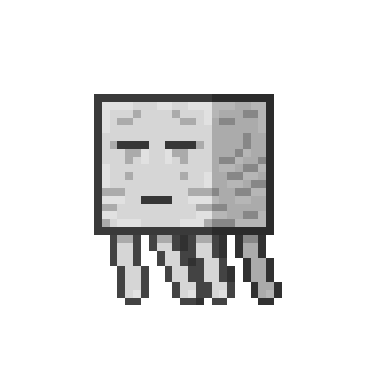

Ip: cheburworld_test.aternos.me
1.21.6/1.22

Добавлен счастливый гаст - дружелюбный моб на котором можно перемещаться в четвером. Обновлен поводок. Добавлен локатор игроков. Название неизвестно, будет добавлено летом.
1.21.5
Добавлены новые растенья, листья и окрас у животных. Новые партиклы в виде падающих лисьтев со всех деревьев. Опавшие листья под деревьями также были добавлены.
1.21.4
Добавили новый биом БЛЕДНЫЙ САД, а вместе с ним новые цветки, несколько видов бледного мха и нового враждебного моба.
1.21
Добавлен новый данж - ДВОРЕЦ ИСПЫТАНИЙ, новые спавнеры и самое главное новый моб БРИЗ
1.19
Добавили новую генерацию миров. Добавили новый данж ГОРОД. Туда добавили жуткого моба ХРАНИТЕЛЬ или же ВАРДЕН. И новые блоки: скалк, скалковый катализатор и другие относящиеся к ним.
CheburWorld MultiVerse
Ip: cheburworld_test.aternos.me
Без ЧИТОВ!
1 - На сервере запрещены любые программы и некоторые текстурпаки и моды облегчающие жизнь.
1.1 - ЧИТЫ = бан на 7 дней
1.2 - Облегчающие программы или эксплоиты бан = на 12 дней
1.3 - Читерские ресурс паки = бан на 2 дня
1.4 - Читерские моды = бан на 3 дня
Помеха работе сервера
2 - Любые вещи, будь то лаг-машина или ддос которые будут мешать работе сервера будут удалены и забанены те кто это устроил
2.1 - Постройка ЛАГ-МАШИНЫ = бан на 14 дней
2.2 - ДДОС АТАКА на сервер = бан навсегда по айпи
Превышение полномочий
3 - Администраторы могут забанить или замутить вас только по указанным причинам, при изменении правил все участники на сервере получат эту информацию
3.1 - Помощь игрокам ресурсами из креатива = снятие и бан на 1 день
3.2 - Угрозы игрокам = снятие + мут на 4 дня
3.3 - Выставления себя за персонал = бан на 2 дня
МОШЕННИЧЕСТВО
4 - Мошенничество запрещено, то есть обман на деньги, обманом украсть аккаунт
4.1 - Попытка прорекламировать что либо в чате. = мут на 2 часа
4.2 - Попытка кражи аккаунта = бан на 3 дня по айпи
4.3 - СПАМ = мут на 3 часа
ТГ чат
Правила
Главная Страница
>